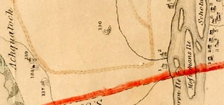

Andries Ten Eyck
Andries Ten Eyck was born in December 1718. He was the son of Coenradt and Gerritje Van Schaick Ten Eyck. He grew up in a large family in the first ward home of a prominent silversmith and businessman. His older brother was named mayor of Albany in 1748.
About 1749, he married Anna Margarita Coeymans. She died in 1760. In July 1763, he married the widow Jannetje Schermerhorn Jansen. By 1772, the two marriages had produced seven children who were christened in the Albany Dutch church.
Although known in Albany business circles and an Albany property holder as well, for the most part Andries Ten Eyck lived in southern Albany County on a farm near "the Hannacroix" once belonging to his uncle Samuel Coeymans. He also paid taxes on property (probably on Schodack Island) in the East Manor of Rensselaerswyck. He owned a Hudson River sloop with his brother and served as a justice of the peace as early as 1756. He most often was identified as a "farmer."
In 1779, his son was named in the will filed by his brother-in-law, Mayor John Barclay. In 1782, he was named in the will filed by his widowed sister.
In 1786, he sold two lots on the south side of State Street - thus ending his direct connection to the city. In 1790, his Rensselaerwcyk household included five family members and four slaves. In 1796, he was involved in a court case regarding his lands at Coeymans.
Andries Ten Eyck died in October 1802. He had lived almost eighty-three years.
A substantial legacy of his holdings has recently been exhibited at the New York State Museum.
Detail from the Bleecker Map of 1767 showing Andries Ten Eyck's home near the southern border of the Manor and a few miles west of the Hudson River.